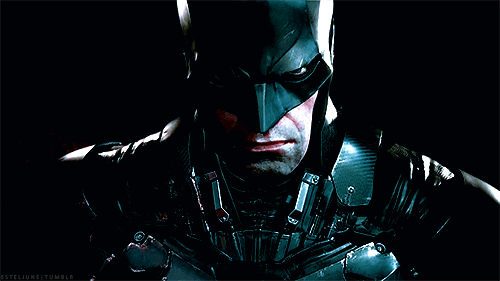

🦇 Eu Bruh, Soy Marlo Valle 🦇
(Mar pa los compas)
P.D: I'M BATMAN 🦇
💬 Sobre mí
Eu Bruh, soy Marlo Valle (Mar, marci, marsito pa los más compas). Estudio Ingeniería en Computación en ESPOL y básicamente vivo trabajando como desarrollador, escuchando música y en mis clases. Amo el café ☕ y de vez en cuando tengo una que otra crisis existencial del tipo "¿por qué no se ejecuta estoooooo?".
Me gusta el desarrollo web (siempre busco hacer web pages bajo pedido y que sean lindas con chatbots y buenas interfaces), me gusta aún más la automatización con n8n (porque si algo se puede automatizar, ¿para qué hacerlo manual?). También me meto con sistemas más "serios" como facturación electrónica y bots inteligentes porque me gusta subir de nivel en todo lo que hago siempre, así que modo chambeador 24/7.
"Entre tasas de café y leer la documentación se encuentra la solución"
— Mar, debuggeando a las 3 AM muerto de sueño y sin poder mimir
👤 Información Personal
| Nombre | Marlo Valle |
| Alias | Mar |
| Ocupación | Estudiante & Desarrollador |
| Ciudad | Guayaquil 🇪🇨 |
| mavalle@espol.edu.ec | |
| GitHub | @MarSalvatore28 |
| Portfolio | marsalvatore28.github.io |
🚀 Proyectos Destacados
⚖️ NexoLegal – Plataforma Legal Profesional

🖨️ TonerExpress – E-commerce Completo

💼 ERPNext SRI – Sistema ERP Empresarial

🤖 AI Automation Hub – Chatbots & Automatización

⚙️ Tecnologías y Herramientas
📊 Stats
🦇 Conexiones
⭐ Si llegaste hasta aquí, recuerda:
🦇 No busco fama, busco propósito.
💻 Y café. Siempre café.